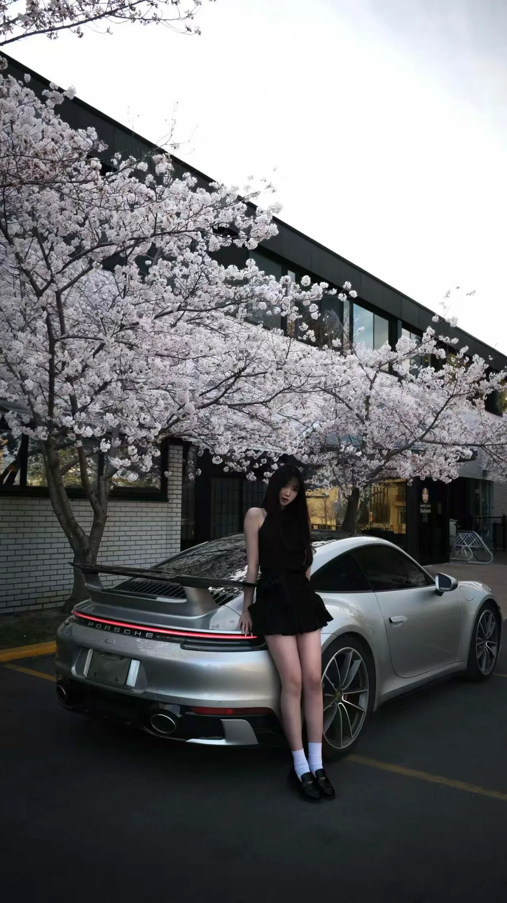

01 / THE CONCEPT
A MOMENT
BETWEEN SEASONS.
What happens when something engineered to move is captured in a moment of complete stillness?
Spring in Motion explores the visual contrast between a silver Porsche 911, a portrait subject and the delicate canopy of cherry blossoms. The car's sculpted lines and metallic surfaces sit alongside soft blossoms and natural light — two very different expressions of form in one frame.
Rather than treating the vehicle as an isolated object, this photograph places it within a quiet, personal scene. Architecture gives the composition structure; the blossoming trees soften its edges; and the model introduces a human presence.
02 / VISUAL DIRECTION
FORM. LIGHT.
PRESENCE.
The photographic direction balances strong engineered geometry with natural, seasonal texture. A restrained palette of silver, charcoal and muted pink keeps attention on the relationship between the car and its surroundings.

DETAIL STUDIES / TWO CROPS FROM THE ORIGINAL PHOTOGRAPH
03 / THE RESULT
An editorial series bringing together automotive design, portraiture, architecture and the atmosphere of spring.